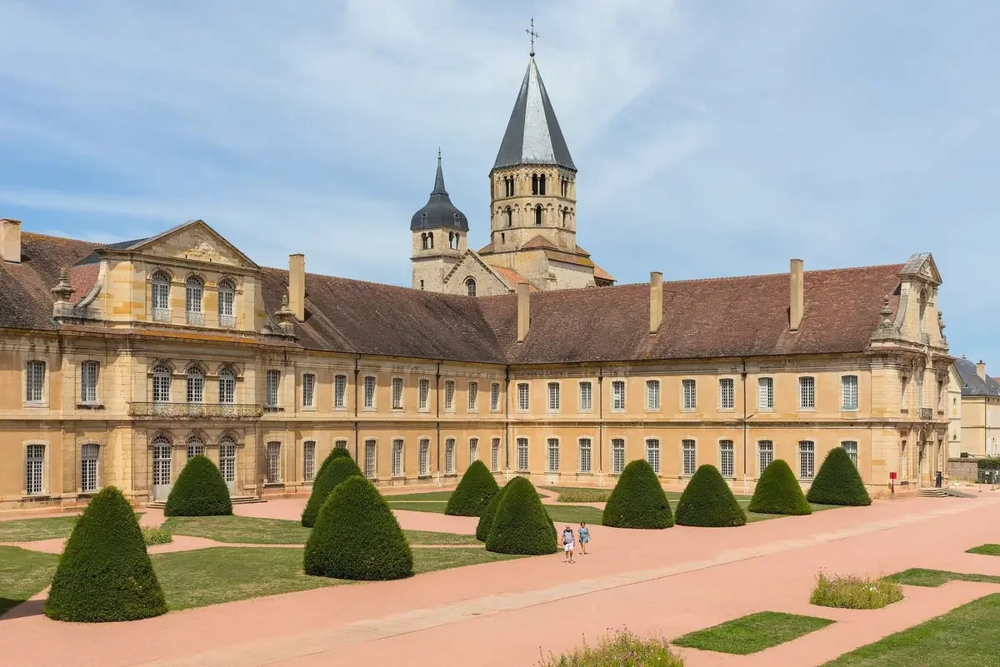
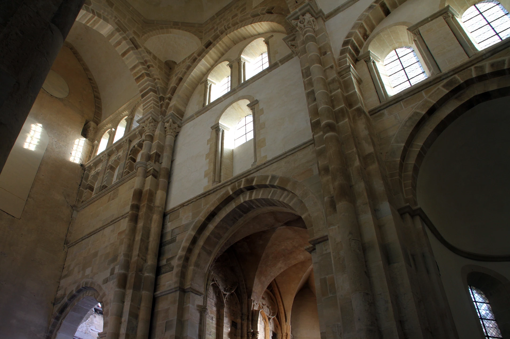
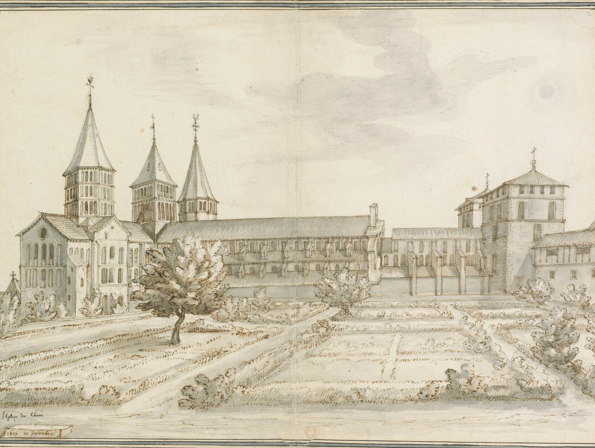
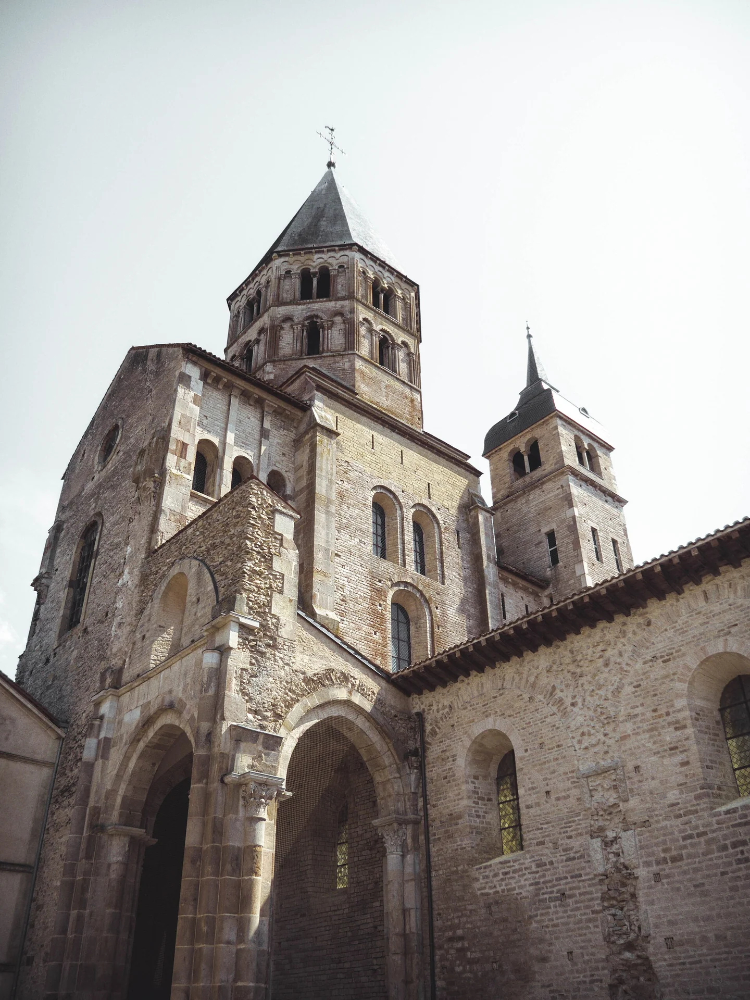
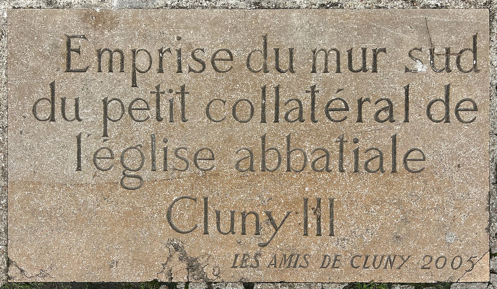

아직 펼치지 않은 카드기도하고 일하는 사람들 · 3클뤼니 수도원16세기까지 유럽에서 가장 컸던 교회가 있었어요. 그런데 지금은 그 가운데 10%만 남았어요. 나머지는 어디로 갔을까요?유럽에서 제일 컸던 교회가 있었대. 그런데 거의 다 사라졌어!
910년 · 1088~1130년 · 1798~1823년프랑스 부르고뉴 클뤼니
클뤼니 수도원
400년 가까이 서방에서 가장 컸던 교회가 있었어요. 1617년 한 화가가 그 모습을 그렸고, 180여 년 뒤 성당은 돌을 캐는 곳이 되었어요. 그 그림을 조각으로 나눠, 큰 교회의 조각들이 지금 어디에 있는지 하나씩 모아 보세요.
아주 큰 교회가 있었는데, 사람들이 돌을 떼어 가서 거의 다 사라졌대. 옛날 그림 조각을 하나씩 모아 볼까?
검수 전 시안이에요(기준서 1판 보탬 10). 수도원 공식 누리집, 프랑스 문화부 고고학 소책자(2010), 클뤼니 성당 정면 연구(2011), 새 가톨릭 백과사전, 창립 문서(910)의 영어 번역을 따랐어요. 1617년 그림을 조각으로 나눈 것은 빗대어 보여 주는 것이에요. 상상은 ‘눈 감고 상상해 보기’에만 썼어요.
시안 확인용카드 단계 미리 보기
1
누구에게도 매이지 않는 수도원
프랑스 부르고뉴의 작은 마을 클뤼니예요. 18세기 수도원 건물 너머로 팔각 종탑 하나가 솟아 있어요. 이 종탑은 한때 유럽에서 가장 큰 교회의 한 조각이었어요.
이야기는 910년 9월 11일의 문서 한 장에서 시작해요. 아키텐 공작 기욤은 이 골짜기의 땅을 내놓아 수도원을 세우며 이렇게 적었어요.
“그곳에 모인 수도사들은 우리의 멍에에도, 우리 친척의 멍에에도, 왕의 권세에도, 이 땅의 어떤 권력에도 매이지 않습니다.”
클뤼니 창립 문서(910) · 헨더슨의 영어 번역(1910)을 이 안내서가 옮김
대신 수도사들은 5년마다 로마의 사도 성당에 등불을 밝힐 돈을 바치고, 사도들의 보호와 교황의 변호를 받기로 했어요. 첫 원장은 베르농이었고, 수도사들은 73장으로 된 베네딕도 규칙을 따랐어요.
931년 교황 요한 11세는 클뤼니가 다른 수도원들도 맡아 돌볼 수 있게 허락했어요. 그렇게 클뤼니를 따르는 수도원이 유럽 곳곳으로 늘어 갔어요.
이 수도원은 왕도 영주도 함부로 할 수 없게 만들었대. 대신 교황님이 지켜 주기로 했어.
물어보기누구에게도 매이지 않으면, 무엇을 마음껏 할 수 있을까?
2
큰 교회가 서다
1088년, 1049년부터 수도원을 이끌어 온 위그 원장이 훨씬 큰 새 성당을 짓기 시작했어요. 클뤼니에 세운 셋째 성당이에요. 본보기는 로마의 성 베드로 대성당이었대요.
1095년 10월 25일에는 교황 우르바노 2세가 큰 제대를 봉헌했어요. 그리고 1130년 10월 25일, 교황 인노첸시오 2세가 성당을 봉헌했어요.

사람들은 이 성당을 ‘큰 교회’(마이오르 에클레시아)라고 불렀어요. 16세기에 로마의 성 베드로 대성당이 들어서기까지, 400년 가까이 서방에서 가장 큰 교회였어요. 프랑스 국립도서관 자료는 길이 187m, 신랑(가운데 긴 몸채)과 옆 복도를 합쳐 다섯 줄, 익랑(가로 날개) 둘, 창 301개를 꼽아요.
사진은 지금 남은 큰 익랑 남쪽 날개의 안쪽이에요. 천장이 30m 가까이 올라가요. 이만한 높이의 긴 몸채가 서쪽으로 길게 이어져 있었어요.
아주아주 큰 교회를 40년 넘게 지었대. 창문만 301개야!
물어보기창문이 301개면, 하나씩 세는 데 얼마나 걸릴까?
3
1617년 그림 속 큰 교회
1617년 9월 22일, 예수회 수사이자 건축가인 에티엔 마르텔랑주가 이 성당을 그렸어요. 그는 성당과 도시를 그리고 그림에 날짜를 적어 두곤 했어요. 성당 북쪽에서 본 모습이라, 왼쪽이 동쪽 끝이에요. 오른쪽 하늘에는 작은 해까지 그려 넣었어요.
그로부터 174년 뒤인 1791년 10월 25일, 남은 수도사 열두 명이 마지막 미사를 드리고 흩어졌어요. 1798년 나라가 차지한 수도원 건물은 팔려 나갔고, 성당을 산 자재 상인들은 성당을 돌을 캐는 곳으로 썼어요. 1823년까지 성당은 거의 다 사라졌어요.
아래 그림을 조각으로 나눠, 흩어진 큰 교회를 빗대어 보여 드려요. 조각을 하나씩 눌러 제자리로 모아 보세요. 조각마다 그 부분이 지금 어떻게 되었는지 나와요.
1617년 그림을 조각으로 나눠 흩어진 큰 교회를 빗댔어요. 조각을 하나씩 눌러 제자리로 모아 보세요.

에티엔 마르텔랑주, 「클뤼니 성당 풍경」, 1617년 9월 22일(펜과 엷은 먹), 프랑스 국립도서관. 성당 북쪽에서 본 모습이라 왼쪽이 동쪽이에요 · 그림: 에티엔 마르텔랑주 · 퍼블릭 도메인 · 위키미디어 공용(프랑스 국립도서관 갈리카)
조각을 눌러 보세요. 그 부분이 지금 어떻게 되었는지 알려 줘요.
1617년의 큰 교회가 한 장으로 다시 모였어요. 실제 돌은 이렇게 다시 모을 수 없지만, 남은 날개와 조각들, 길바닥 돌판이 그 크기를 기억하게 해 줘요.
큰 교회 가운데 지금 서 있는 것은 큰 익랑의 남쪽 날개와 그 위의 팔각 종탑뿐이에요. 원래 성당의 10%쯤이라고 해요.
사람들이 성당 돌을 떼어 가서 거의 다 사라졌대. 그림 조각을 눌러서 다시 모아 볼까?
물어보기조각이 다 모이면, 성당이 얼마나 길어 보여?
4
남은 날개 하나
지금 클뤼니에 가면 이 남쪽 날개를 올려다볼 수 있어요. 큰 교회에는 종탑이 넷 있었는데, 남은 것은 이 팔각 종탑 하나예요. 이름은 ‘성수 종탑’이에요. 성수는 축복한 물을 말해요.
종탑은 12세기 후반에 올렸고, 창이 두 층으로 나 있어요. 아래층에는 십자 무늬, 위층에는 구슬 무늬가 새겨져 있어요. 뾰족한 지붕은 15세기에 장 드 부르봉 원장이 다시 얹었는데, 다른 클뤼니 성당들이 이 모양을 본떴어요. 파레르모니알 성당도 그중 하나예요.

날개 곁에 붙은 가장 남쪽의 작은 경당은 처음 지은 로마네스크(둥근 아치를 쓰던 11~12세기 건축) 모습을 지니고 있어요. 그 곁의 생마르시알 경당은 14세기에 고딕 양식으로 다시 지었어요.
성당 동쪽 끝 둥근 머리를 두르던 기둥머리 조각들은 13세기 곳간 건물 ‘파리니에’에 모여 있어요. 성당은 사라졌어도, 남은 날개와 조각들로 사람들은 그 크기를 다시 그려 봐요.
큰 교회에서 남은 날개 하나와 종탑 하나야. 종탑에는 창이 두 층으로 나 있어.
물어보기이 종탑 꼭대기에 올라가면 무엇이 보일까?
눈 감고 상상해 보기
1617년 9월, 수도원 정원은 조용해요. 종탑 셋이 하늘을 찌르고, 긴 지붕이 정원 끝까지 이어져요. 마르텔랑주는 펜을 들어 탑을 하나하나 세어 가며 그려요. 종이 울리면 수도사들이 줄지어 큰 교회로 들어가요. 이 큰 성당이 언젠가 돌무더기가 되리라고는, 그날 정원에 선 누구도 생각하지 못했을 거예요.
눈을 감아 봐. 넓은 정원 너머로 뾰족한 탑 세 개가 보여. 화가 아저씨가 펜으로 쓱쓱 그려. 종이 땡그랑 울려!
나의 자리
사라진 것의 빈자리가 오히려 그것의 크기를 말해 줄 때가 있어요. 내 삶에서 빈자리로 남은 것은 무엇인가요?
아주 큰 성을 상상해서 그려 볼까?
마음에 닿는 한 줄을 고르거나 직접 써 보세요. 한 줄을 남기면 이 자리의 도장이 찍혀요. 이 기기에만 저장돼요.
더 깊이
궁금한 칸만 펼쳐 읽어도 괜찮아요.
알고 보면
꿈에서 받은 설계 전해지는 이야기로는 군조라는 수도사가 꿈에서 베드로 사도에게 이 성당의 설계를 받았대요. 프랑스 문화부 고고학 소책자는 그 꿈을 실제 성당으로 지어 낸 사람으로 건축가 에젤롱을 꼽아요.
10월 25일 큰 제대 봉헌(1095), 성당 봉헌(1130), 마지막 미사(1791)가 모두 10월 25일이었어요.
짓다가 높인 천장 공사 중에 천장 높이를 20m쯤에서 30m로 높였대요. 큰 익랑 남쪽 날개의 셋째 칸에서 그 흔적을 볼 수 있어요.
무른 땅 위의 큰 교회 강가의 무른 땅에 성당을 세우려고, 바둑판처럼 엮은 큰 기초를 깔았어요.
사라진 조각들 서쪽 정문 위의 ‘영광의 그리스도’ 조각(1115년 무렵)은 1810년에 부서졌어요. 1798년 7월 16일에는 성당의 유리창이 모두 깨졌고, 며칠 뒤 정면의 장미창이 무너졌어요.
그림을 그린 사람 에티엔 마르텔랑주(1569~1641)는 예수회 수사이자 화가, 건축가였어요. 그가 날짜를 적어 남긴 그림들은 지금 프랑스 국립도서관에 있어요. 1625년 3월 19일에 그린 파리 몽마르트르 수도원 그림도 그중 하나예요.
함께 보면 좋은 카드 베네딕도 규칙서를 처음 쓴 몬테카시노 수도원, 1,200년 전 수도원 설계도 이야기도 이 세트에 있어요.
길바닥의 돌판

클뤼니 마을 길바닥에는 이런 돌판이 놓여 있어요. ‘클뤼니 셋째 성당의 작은 옆 복도 남쪽 벽이 있던 자리’라고 새겨져 있고, 2005년 ‘클뤼니의 벗들’이 놓았다고 적혀 있어요.
돌판이 놓인 곳은 지금 마을 길이에요. 큰 교회의 벽이 그 길 위를 지나갔던 거예요.
기록마다 다른 점
길이 프랑스 국립도서관 자료는 187m라고 적고, 2010년 프랑스 문화부 고고학 소책자는 150m쯤이라고 적어요. 어디서부터 어디까지 쟀는지는 적혀 있지 않아요.
종탑 수 수도원 공식 누리집은 종탑이 넷이었다고, 프랑스 국립도서관 자료는 다섯이었다고 적어요.
짓는 차례 2011년 정면 연구는 20세기 고고학자들의 생각을 따라 성당이 동쪽에서 서쪽으로 지어졌다고 적어요. 2010년 고고학 소책자는 이 생각이 새 조사로 고쳐지고 있다고 적어요.
서쪽 정면이 끝난 때 2011년 정면 연구는 정면이 1220년대에 마무리되었을 것으로 보고, 새 가톨릭 백과사전은 서쪽 탑 공사가 1450년 무렵까지 이어졌다고 적어요.
더 찾아보기
성당을 세운 문서와 사라진 성당을 파헤친 고고학 자료를 직접 읽어 볼 수 있어요.
흩어진 조각 모으기 금박
1617년 그림의 조각 다섯을 모두 제자리로 모으면 금박이 입혀져요.
그림 조각 다섯을 모두 제자리로 모으기
큰 교회 이야기를 끝까지 채색
아이와 함께 끝까지 보면 카드가 채색돼요.
아이와 함께 ‘영화처럼 보기’를 끝까지 보기
근거 보기 (10)
- 클뤼니 창립 문서(910) — 헨더슨, 『중세 역사 문서 선집』(1910) 영어 번역(포덤 대학 중세 자료집): 수도사들은 우리·친척·왕·이 땅의 어떤 권력의 멍에에도 매이지 않음, 5년마다 로마 사도 성당에 등불 값, 사도들의 보호와 교황의 변호, 부르주에서 작성
- 클뤼니 수도원 공식 누리집(프랑스 국립기념물센터) 「클뤼니 수도원의 역사」 — 910년 9월 11일, 기욤, 교황에게 직접 속함, 첫 원장 베르농, 73장 규칙, 931년 요한 11세의 특권, 1088년 위그(1049년부터 원장), 성 베드로 대성당을 본보기로, 30m 넘는 천장, 16세기까지 400년 가까이 가장 큰 교회, 군조의 환시, 1095년 10월 25일 큰 제대 봉헌, 1791년 10월 25일 열두 수도사의 마지막 미사, 1798년 국유 재산으로 매각, 자재 상인의 채석장, 파리니에(13세기)에 둥근 머리의 기둥머리
- 클뤼니 수도원 공식 누리집 「큰 수도원의 인상적인 유적」 — 큰 익랑 높이 30m 가까이, 큰 익랑과 성수 종탑만 서 있음, 종탑 넷 가운데 하나, 팔각·12세기 후반·두 층 창·십자와 구슬 무늬, 15세기 장 드 부르봉의 지붕을 파레르모니알 등이 본뜸, 가장 남쪽 경당의 로마네스크 모습, 14세기 생마르시알 경당
- 프랑스 문화부(부르고뉴 지역 문화국) 고고학 소책자 「클뤼니, 한 수도원의 고고학」(2010, 사팽·보·디디에·페르) — 1088/1130, 1095년 큰 제대, 1130년 인노첸시오 2세의 봉헌, 군조의 꿈과 건축가 에젤롱, 천장을 20m에서 30m로, 바둑판 기초, 다섯 줄 150m쯤, 동→서 차례 생각이 고쳐지는 중, 바라방 탑(12~13세기), 1798~1823년 허물기, 남쪽 날개만 남음, 1988년 앞 성당 터를 드러냄
- 롤리에한셀만 외, 「클뤼니 셋째 성당: 고딕 정면 연구」(오세르 중세 연구소 회보 15, 2011) — 동쪽에서 서쪽으로 지음, 정면은 1220~1228년 무렵 마무리, 1798년 4월 24일 매각과 허물기 시작, 7월 16일 유리창, 장미창 무너짐, 8월 앞 성당 헐림, 그해 탑 지붕, 1809년 6월 북쪽 탑·1810년 10월 남쪽 탑, 앞 성당을 가로지른 길, 장미창 조각이 집 벽에
- 새 가톨릭 백과사전 「클뤼니 미술과 건축」(C. F. 반스) — 1088년 9월 30일 공식 시작, 1095년 10월 25일 둥근 머리 봉헌, 1130년 10월 25일 인노첸시오 2세 봉헌, 서쪽 탑 공사 1450년 무렵까지, 1115년 무렵 ‘영광의 그리스도’와 1810년 파괴, 1798~1823년 남쪽 날개만 남기고 허물어짐
- 프랑스 국립도서관 파스렐(Passerelles) 「클뤼니 수도원」 — 마이오르 에클레시아, 1088~1130, 16세기까지 가장 큰 교회, 187m, 큰 익랑 둥근 지붕 아래 40m쯤, 다섯 줄, 익랑 둘, 창 301개, 종탑 다섯
- 프랑스 국립박물관연합 사진 기록 — 마르텔랑주(1569~1641): 그림 그리는 사람·화가·건축가·예수회 수사, 날짜를 적은 그림(프랑스 국립도서관 소장)
- 홀리 헤이스, 「클뤼니 수도원 성당 터」 사진 설명(GoHistoric, 2008) — 비탈 지붕을 얹은 돌 건물이 서쪽 큰 탑(바라방)의 남은 아랫부분, 남쪽 익랑 위 성수 종탑
- 위키미디어 공용 파일 설명(API로 확인): 마르텔랑주의 1617년 9월 22일 그림(프랑스 국립도서관 갈리카) · 2005년 ‘클뤼니의 벗들’ 돌판(2024년 사진, 8월 11일 길)
그림·사진·소리 출처
‘처음 만나는 기독교 문화’의 깊은 카드예요. 카드 단계와 남긴 글은 이 기기에만 저장돼요.